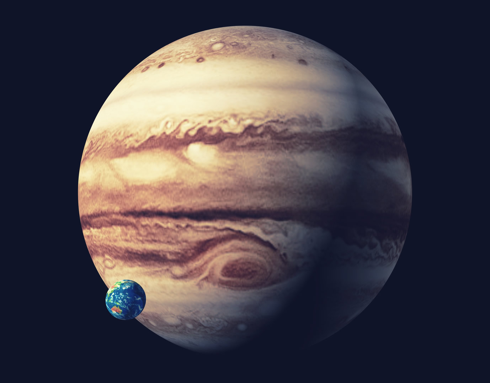
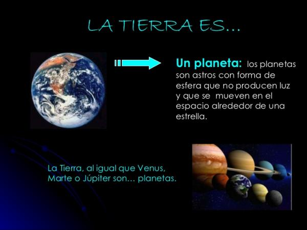

A lo largo de la historia, la definición de planeta ha ido cambiando según los investigadores iban descubriendo nuevas cosas sobre el Universo. La definición más sencilla de planeta es la siguiente:
Un planeta es un cuerpo celeste que posee la suficiente masa como para generar su propia fuerza de gravedad, tiene forma esférica (que aporta un equilibrio hidrostático) y orbita alrededor de una estrella.
Otros muchos cuerpos celestes no cumplen todas estas características, por lo que no se consideran planetas. Están los planetas secundarios, que no orbitan alrededor de una estrella sino que orbitan alrededor de otros planetas; los planetas menores, que tienen un tamaño demasiado pequeño como para tener fuerza de gravedad (asteroides y cometas), enanas marrones, con demasiada masa para ser un planeta y demasiado poca para ser una estrella...
Muchos cuerpos celestes de diferente naturaleza cumplen con estas características por lo que los investigadores han sido capaces de agrupar los planetas siguiendo una gran cantidad de parámetros diferentes.

Según la Unión Astronómica Internacional, para que un cuerpo celeste sea considerado como planeta debe cumplir con las siguientes características:
Los cuerpos celestes que no reúnen estas condiciones son llamados asteroides o planetas menores. Otros cuerpos aún más pequeños que estos son llamados meteontos y micrometeoritos.
En nuestro sistema solar existen ocho planetas, que son: Mercurio (símbolo ☿), Venus (♀), la Tierra (♁ o ⊕), Marte (♂), Júpiter (♃), Saturno (♄), Urano (♅) y Neptuno (♆).
La palabra proviene del latín planēta, y este a su vez del griego πλανήτης (planétes). En su origen griego, la palabra planeta significa ‘errante’ o ‘vagabundo’.
Además las condiciones ya descritas, los planetas presentan características específicas como las sustancias de que están compuestos, el tipo de estructura que poseen, la trayectoria que describen sus órbitas y los diferentes movimientos que realizan en sus desplazamientos.
Los planetas pueden estar formados por materiales sólidos y por gases acumulados. Los materiales sólidos básicos son rocas formadas de silicatos y hierro. Los gases son en su mayoría hidrógeno y helio. Los planetas también poseen diferentes tipos de hielo, formados por metano, amoníaco, dióxido de carbono y agua.
La proporción y especificidad de estos materiales variará según el tipo de planeta. Por ejemplo, planetas rocosos como la Tierra se forman de material rocoso y metálico y, en menor proporción, de gases. En cambio, planetas gaseosos como Júpiter, están formados esencialmente por gases y hielo.
La estructura interna de los planetas depende de su composición. Los planetas rocosos están compuestos por:
Los planetas gaseosos también están estructurados por un núcleo, cuyas características aún no están confirmadas. Se especula que sea una mezcla de roca y hierro, o de hidrógeno metálico o hielo. Sin embargo, el resto de su masa es gas o gas comprimido líquido.
Todos los planetas se desplazan en torno a una estrella describiendo una trayectoria elíptica. La velocidad del trayecto dependerá de la distancia respecto del sol. Cuando más lejos estén de su estrella, la velocidad del planeta será más lenta.
Los planetas realizan los siguientes movimientos: